一款由Google提供的Android系统电量分析工具.能够以网页形式展示手机的电量消耗过程：
查看手机耗电量走势
哪些 APP 在前台运行
哪些应用持唤醒锁，以及手机相应的清醒时间
进入doze时刻及时长
不同时刻网络连接情况、屏幕状态、CPU运行状态等等。
可以通过此了解唤醒频率、有谁发起，持续多长时间，从而协助找出手机耗电量快的原因
获取bugreport.txt文件方法：
# 重置电量信息
adb shell dumpsys batterystats --reset
# 让系统记录所有的的WakeLock信息
adb shell dumpsys batterystats --enable full-wake-history
# 测试完成后，导出bugreport
adb bugreport > name_of_bugreport.txt
# 设置手机进入不充电的状态 <- 这样我们才能连着电脑收集数据
adb shell dumpsys battery unplug
# adb shell dumpsys battery -h
# Dump current battery state, or:
# set [ac|usb|wireless|status|level|invalid] <value>
# unplug
# reset
成功导入bugreport.txt文件后界面显示:
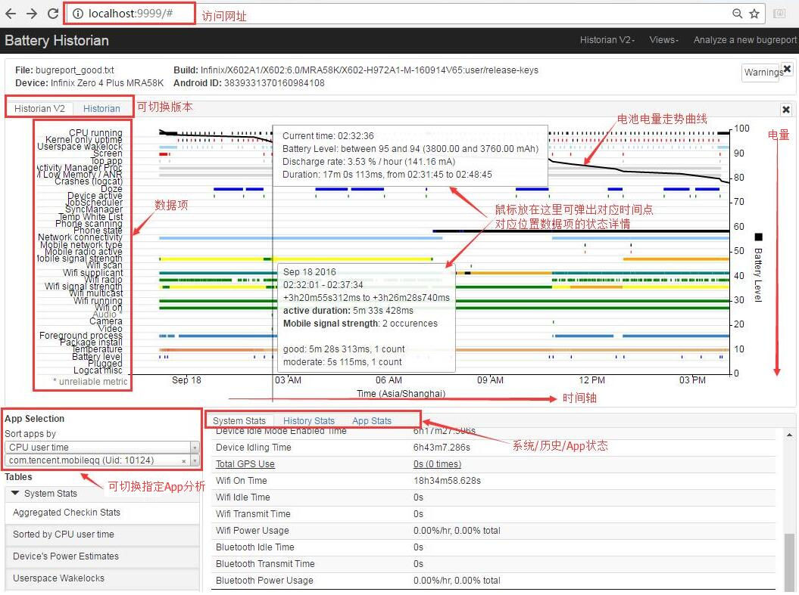
kernel唤醒源、时间及次数：
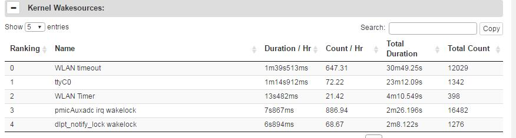
耗电量排行:
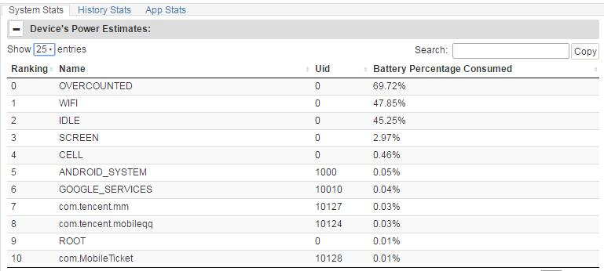
每个app使用的移动流量:
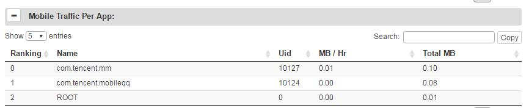
每个APP占用移动网络时间此次数:
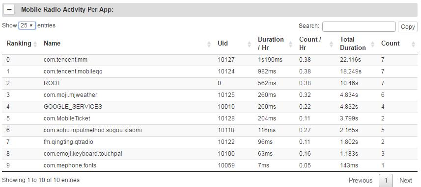
APP持锁时间及次数:
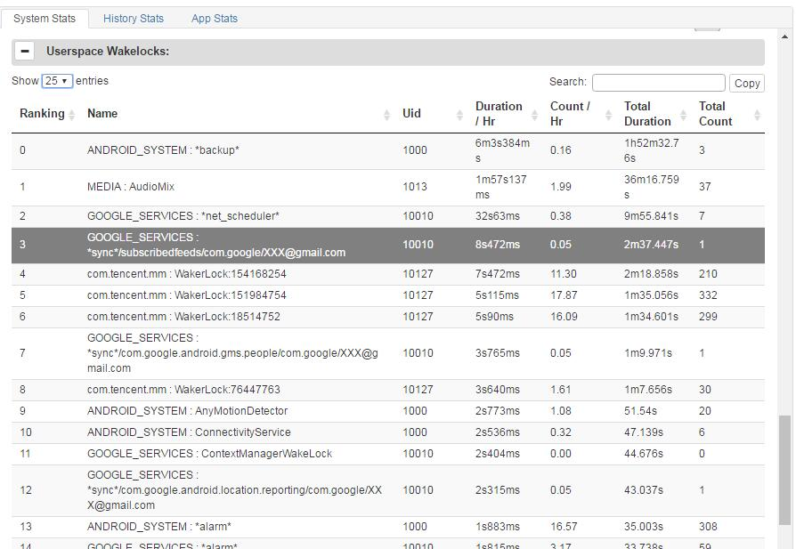
同时导入两个bugreport.txt文件做对比分析：
（1）以图表的方式对比展示：
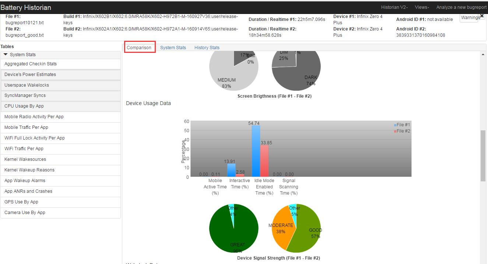
（2）从系统状态维度对比展示：
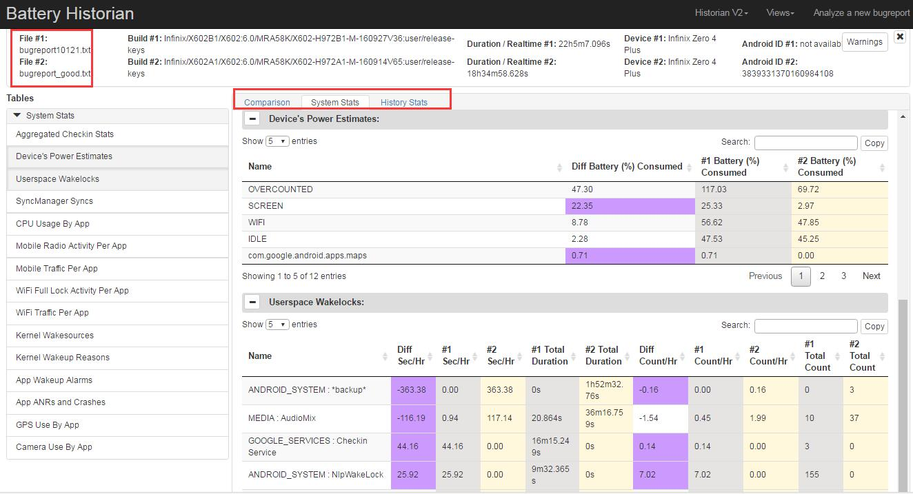
（3）从历史状态维度对比展示：
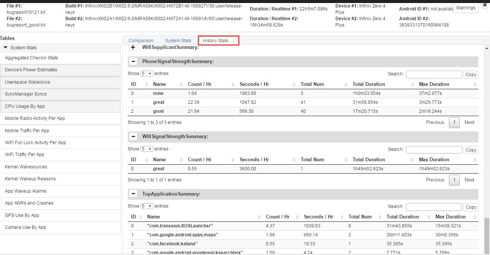
用户手机晚上待机后，发现手机依然发热，电池耗电量很快，需要找出导致耗电量快的原因。 第一步导出手机bugreport.txt并上传，观察耗电量统计图：
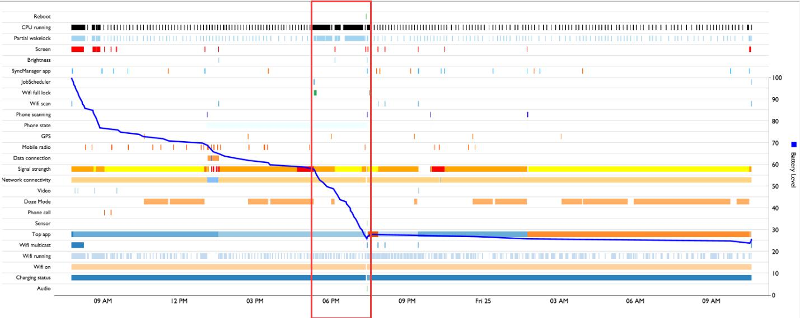
从图中可以清晰的看到，当6PM左右，屏幕关闭时耗电量非常快，说明有应用在后天持锁，导致系统一直在后台运行，将光标移动到UserSpace WakeLock行，会显示如下信息：
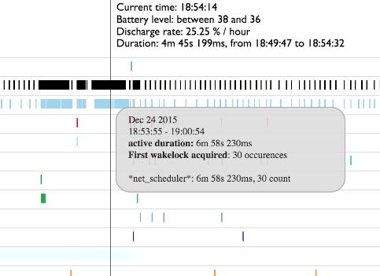
从图中可以看到 "net_scheduler" 很可能是手机保持唤醒的原因，但是它表示什么意思呢？打开"System stats"面板下的"Userspace Wakelocks"模块：
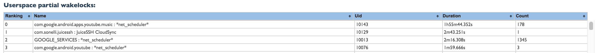
从中可以看到对应的YouTube music app在持锁，可能就是CPU保持唤醒的原因。可以通过关闭或卸载该应用，再次待机测试进行验证确认。
手机电池消耗量过快,将bugreport.txt并上传分析：
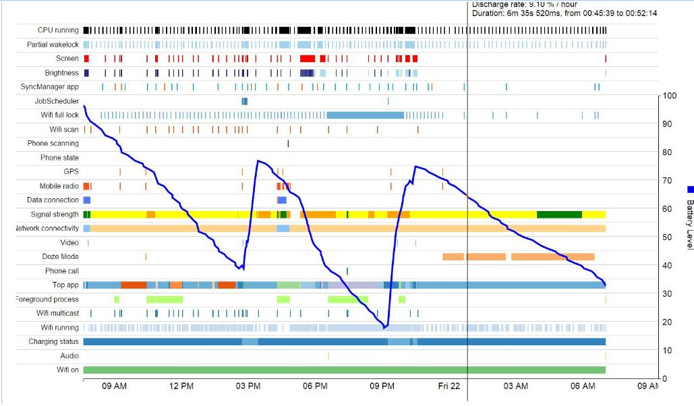
通过观察上图可以发现，在灭屏待机后手机耗电量依然很快，说明灭屏状态下没有进去睡眠，观察灭屏后的UserSpace WakeLock信息，也没有发现异常。此时确认将手机的关闭wifi、audio、蓝牙、LTE关闭，继续待机观察：
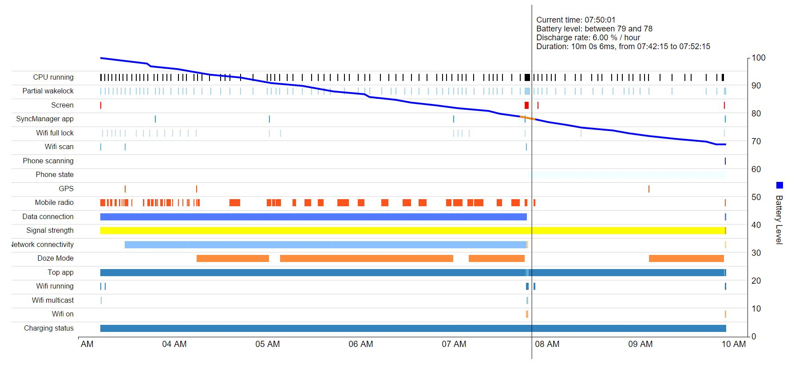
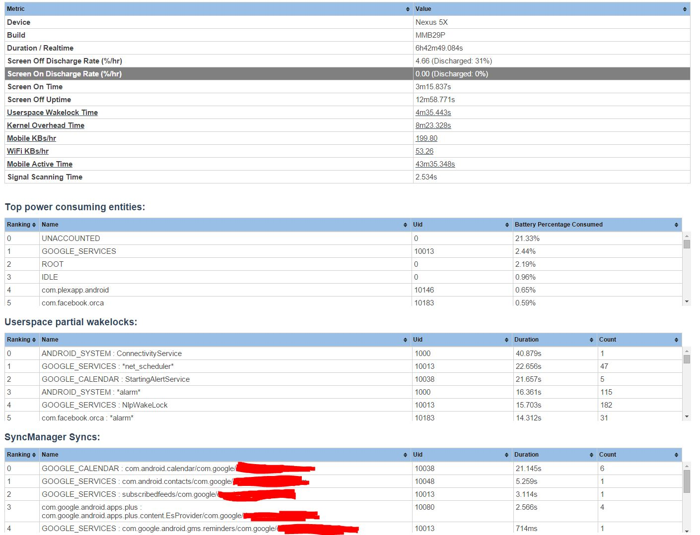
通过电量曲线发现，待机7小时电量消耗30%，明显不正常，此时已经排除了wifi、蓝牙、LTE关闭等影响，也可能是硬件导致，此时单凭Battery-Historian tool无法找到原因，需要结合MTKlog，systrace等继续分析。